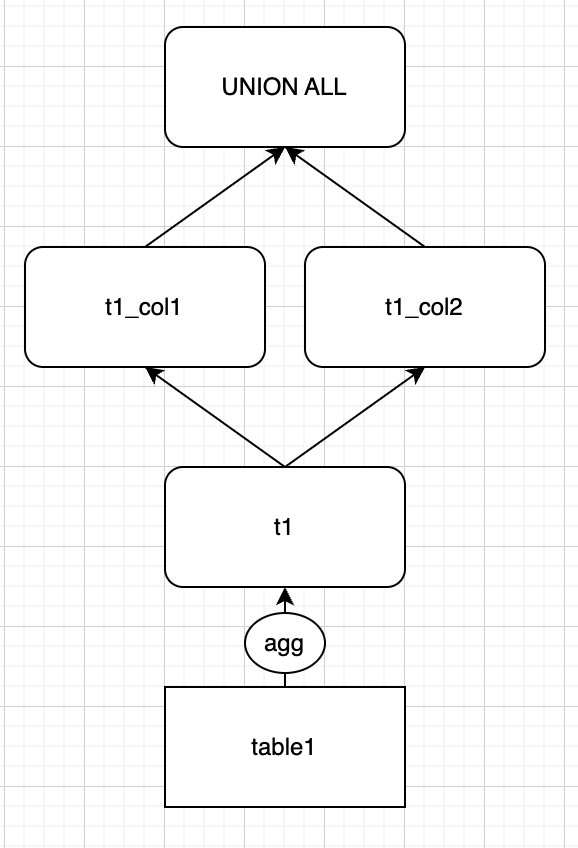
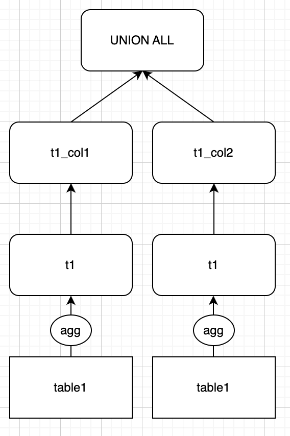

WITH절/VIEW 사용 시 쿼리 플랜에 대해서
WITH절/VIEW 사용은 효율적인 쿼리플랜과 관련이 없다
WITH절(CTE)
WITH절은 SELECT문을 전에 작성하여 복잡한 쿼리를 alias로 처리할 수 있도록 도와줍니다. SELECT문 내에서 여러번 반복해서 사용해야하는 구문을 미리 WITH절로 정의해놓음으로써 작성되는 쿼리의 복잡성을 낮출 수 있습니다. CREATE VIEW와 비슷하지만, WITH절 내에서 정의된 컬럼명과 테이블은 쿼리 세션이 종료되면 유지되지 않는다는 차이점이 있습니다. 또한, WITH절은 존재하는 테이블/뷰의 이름과 중복되더라도 충돌이 발생하지 않습니다.
WITH절을 사용하는 목적은 3가지로 요약할 수 있습니다.
- 작성하는 쿼리 내부의 중복을 줄임으로써 쿼리 작성이 편리해집니다.
- 쿼리의 복잡한 부분을 추출하여 WITH절로 정의해둠으로써 쿼리를 읽고 이해하기 쉽게 합니다.
- WITH절을 지원함으로써 다른 DB와의 호환성이 보장됩니다. 특히, Oracle과의 호환성이 지원됩니다.
다만, Impala의 WITH절은 recursive query를 지원하지 않습니다.
WITH절 사용 예시
WITH절은 아래처럼 차례대로 정의되는 경우가 일반적입니다.
-- Define 2 subqueries that can be referenced from the body of a longer query.
with
t1 as (
select 1
),
t2 as (
select 2
)
insert into tab
select *
from t1
union all
select *
from t2
;
서브쿼리 내부에서 WITH절을 정의하고 사용할 수도 있습니다. 아래의 t2는 UNION ALL의 앞부분에서 정의되고 사용되었습니다.
-- Define one subquery at the outer level, and another at the inner level as part of the
-- initial stage of the UNION ALL query.
with
t1 as (
select 1
)
-- UNINON ALL의 앞부분 사적
(with t2 as (
select 2
)
select * from t2
)
-- UNINON ALL의 앞부분 종료
union all
select * from t1;
VIEW1
view는 alias문처럼 동작하는 경량 논리구조(lightweight logical constructs)입니다. SELECT문에서 테이블 이름을 특정해야하는 부분에 view 이름을 적음으로써 사용할 수 있습니다.
a view is purely a logical construct (an alias for a query) with no physical data behind it
주의해야할 점은 view는 순수하게 논리구조이므로 실제로 데이터를 따로 저장해두지 않습니다. ALTER VIEW와 같은 DDL도 view를 관리하는 메타데이터를 변경할 뿐, HDFS에 저장된 데이터 파일에 영향을 주지 않습니다.
view는 아래와 같은 특징들을 갖습니다.
- 압축되고 간단한 문법으로 복잡한 쿼리를 다룰 수 있습니다.
- 복잡한 쿼리의 중복 사용을 줄임으로써, 유지보수를 쉽게 합니다.
- view 생성 시에 새로운 절, SELECT-LIST, 함수 호출 등을 사용하여 정교한 쿼리를 작성할 수 있습니다.
- 칼럼과 테이블의 이름을 직관적인 이름으로 부여할 수 있습니다.
- view에 연결된 테이블을 변경하는 과정에서 downtime이 발생하지 않습니다.
- 여러 쿼리들에서 반복적으로 사용되는 같은 서브쿼리를 view로 정의해둠으로써 긴 서브쿼리 작성을 피할 수 있습니다.
view를 사용할 때는 아래와 같은 제한사항이 있습니다.
- impala view에는 데이터를 INSERT할 수 없습니다.
- view를 생성할 때 사용된 쿼리의 WHERE절과 현재 실행한 쿼리의 WHERE절이 partition pruning에 적용됩니다. 1.4 버전 이전에는 view 생성 시 사용된 쿼리의 WHWERE절만 partition pruning이 적용되었습니다.
- view 생성 시
LIMIT이 없이 사용된ORDER BY는 무시됩니다.
WITH절/VIEW 사용과 쿼리 플랜에 대해서
아래와 같은 쿼리를 작성했을 때, 어떤 query plan이 생성되리라 기대하시나요?
WITH
t1 AS (
SELECT col1, col2
,MAX(col3) AS col3
FROM table1
GROUP BY col1, col2
),
t1_col1 AS (
SELECT col1 AS level1
,col3
FROM t1
GROUP BY col1
),
t1_col2 AS (
SELECT col2 AS level1
,col3
FROM t1
GROUP BY col2
)
SELECT *
FROM t1_col1
UNION ALL
SELECT *
FROM t1_col2
저는 위와 같은 쿼리를 작성하면서 WITH절 t1을 t1_col1, t1_col2에서 공통으로 사용하고 있으므로, 아래와 같이 t1으로부터 파생되는 WITH절을 생성하는 쿼리 플랜을 기대했었습니다. 즉 전체 쿼리 실행 중에 GROUP BY로 발생하는 계산은 1회만 발생하리라 예상했습니다.

그러나 impala에서 위와 같은 쿼리를 실행했을 때 확인되는 쿼리 플랜은 실제로는 아래와 같았습니다.

실행 중에 table1은 2번 스캔하고, t1을 생성하는 WITH절도 2번 실행됩니다. 즉 GROUP BY 연산이 2회 발생했습니다. 예상했던 것보다 2배의 스캔량과 2배의 연산이 발생했습니다.
쿼리를 작성하는 사람은 하나의 t1으로부터 t1_col1, t1_col2를 생성하겠다는 의미를 담아 쿼리를 작성했을 확률이 높습니다. 실제로 저 또한 그러했습니다. 그러나 실제로 실행될 때에는 쿼리 작성자의 의도와는 다르게 2번의 스캔과 2번의 연산이 발생하게 됩니다. 이런 차이점이 발생하는 이유는 무엇일까요?
그것은 기본적으로 WITH절이 VIEW와 같이 순수한 논리구조(purely a logical construct)에 불과하기 때문입니다. 앞서 설명드린 것처럼 VIEW는 실제로 HDFS에 어떤 데이터를 생성하거나 변경시키지 못합니다. 단지 해당 VIEW를 조회할 때, VIEW 생성 시 사용된 로직(SELECT문)을 실행시켜주는 논리구조에 불과합니다.
WITH절도 VIEW와 마찬가지로 HDFS 어딘가에 그 생성 결과를 저장해두거나 실제 데이터를 변경시키는 작업을 하지 못합니다. 단지 해당 쿼리 세션 내에서 일치하는 부분을 WITH절로 변경시켜주는 것에 불과합니다.
즉 제가 예시로 들었던 쿼리는 기본적으로 아래의 쿼리를 실행하는 것과 동일하며, 쿼리 플랜 역시 아래 쿼리를 실행하는 것과 동일할 뿐입니다.
SELECT *
FROM (SELECT col1 AS level1
,col3
FROM (SELECT col1, col2
,MAX(col3) AS col3
FROM table1
GROUP BY col1, col2 ) t1
GROUP BY col1)
UNION ALL
SELECT *
FROM (SELECT col1 AS level1
,col3
FROM (SELECT col1, col2
,MAX(col3) AS col3
FROM table1
GROUP BY col1, col2 ) t1
GROUP BY col2)
같은 예시를 WITH절 대신 VIEW를 사용하여도 같은 결과를 확인할 수 있습니다.
따라서 쿼리 작성 시 WITH절/VIEW를 사용함으로써 효율적인 쿼리 플랜을 만들 수 있다고 생각해선 안됩니다. WITH절과 VIEW의 사용은 단순히 1) 쿼리 내 중복 사용을 줄이고, 2) 쿼리를 읽고 이해하기 쉽게 만드는 것임을 기억해야합니다.
[참고]
WITH Clause
Overview of Impala Views
CREATE VIEW Statement